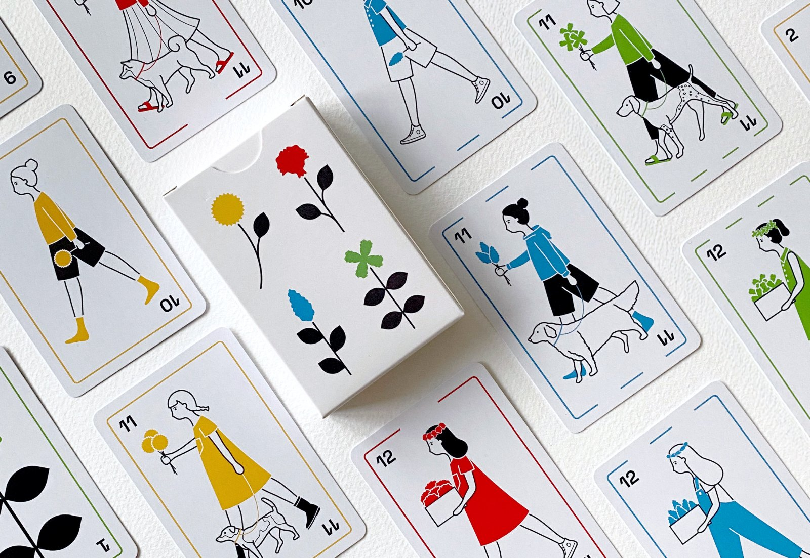
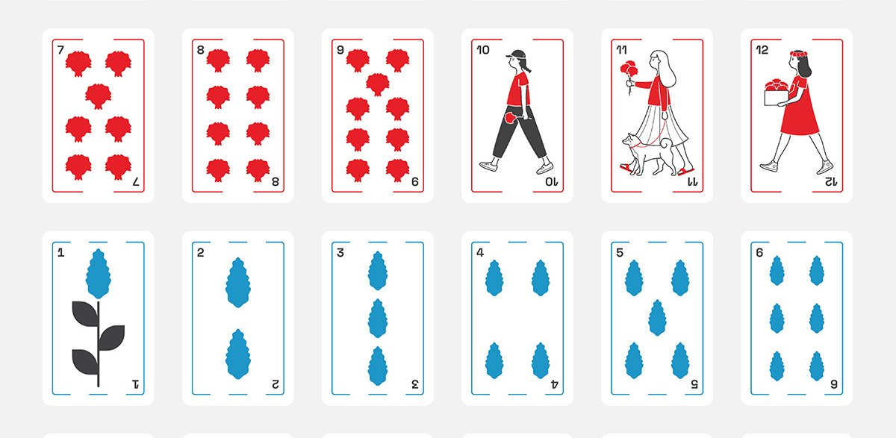
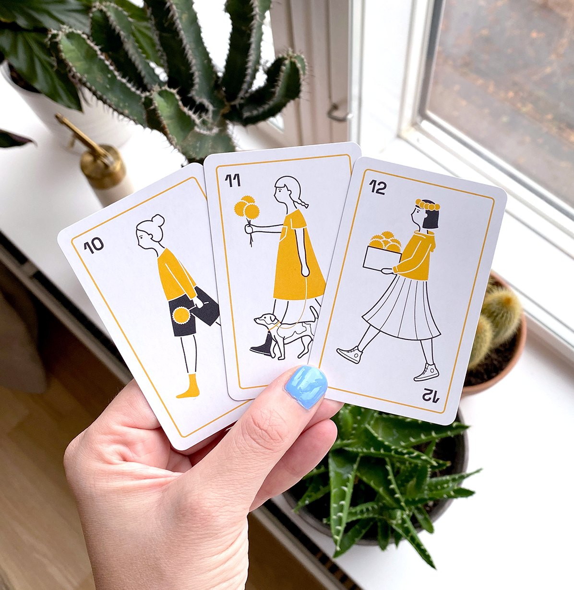
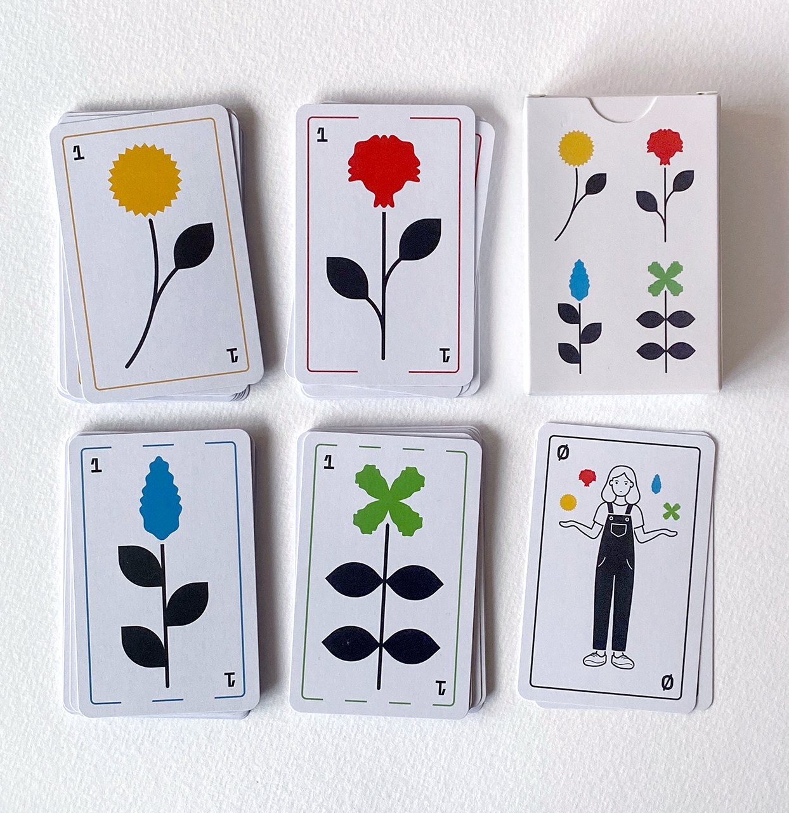
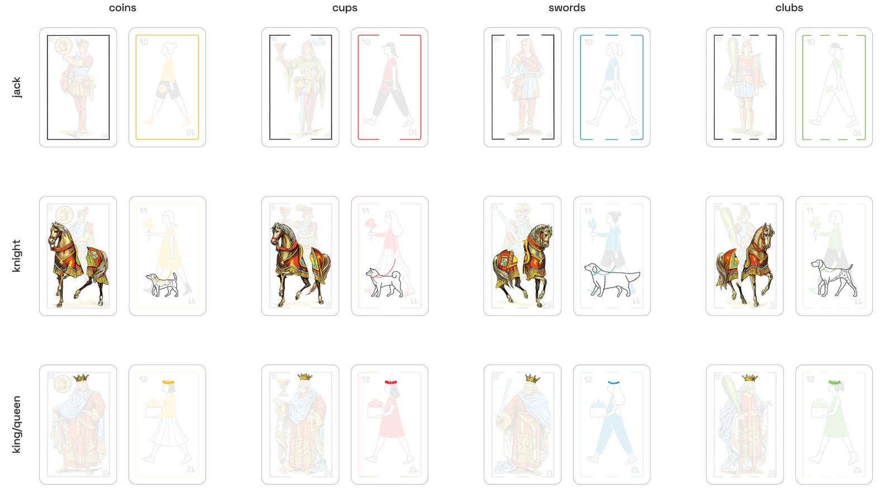
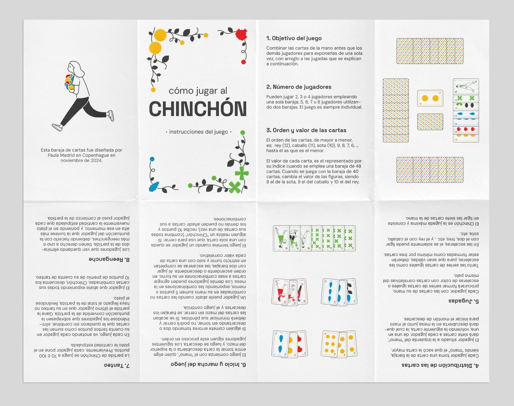

Flowers & Dogs Deck of Cards
What started as a personal illustration project slowly bloomed into something bigger.
I began this series as a simple creative exercise: reimagining the classic Spanish deck of cards through flowers, with each suit (Coins, Cups, Swords, and Clubs) represented by a different botanical element. Along the way, I started pairing each design with a dog, using minimalist lines, but bold colors to give the cards personality without clutter.


Printed on premium card stock with a smooth, durable finish, this deck is designed to be used — for games, cardistry, magic, or simply displayed as a small collection of illustrated moments. It’s a little mix of tradition, play, and personal storytelling.



